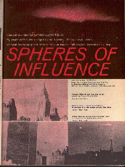
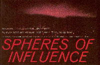
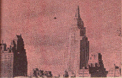
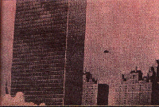
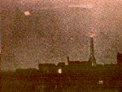

(Click on pics to view larger images.)
Saucers - real or unreal - don't just fly over obscure villages and farms.
They have been known to soar past many
of our most influential landmarks too.
SPHERES OF INFLUENCE

Bright, cigar-shaped object over New York City skyline
was submitted to U.S. Air Force as UFO by Irving
Underhill,
who took photo March 20, 1950.
Project Blue Book - USAF photo.

Surveyor Milton B. took photo (left) of disc passing by Empire State Building.
Michael Mann Photo

Same surveyor captured United Nations in background
as disc headed out over East River.
Michael Mann
Photo

Double discs are seen passing over Eiffel Tower
at 3:45 a.m. in 1953 photo by M. Paulin.
Michael
Mann Photo